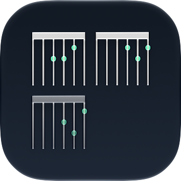

ChordGrid
Create precise guitar and bass chords or choose them by symbol, reuse shapes from your Chord Library, arrange them into clear sheets, and share your work.
What’s new in 1.2.0
Choose chords by symbol: pick a root, chord type, and optional bass note or inversion, then swipe through compatible voicings to load one or add it straight to your sheet. ChordGrid Pro adds Key Palettes, which show the seven chords of any major or natural-minor key as pads with Roman-numeral roles. This release also adds built-in six-string guitar voicings for all twelve roots and layouts that adapt better to larger text sizes.
Choose chords by symbol
Pick a root, chord type, and optional bass note or inversion from major, minor, diminished, augmented, suspended, sixth, and seventh chords, with sharp or flat spelling. Swipe through compatible voicings, including your matching personal chords, then load one for editing or add it to your sheet. Selections can be undone, and a warning appears if an edited diagram no longer matches its symbol.
Compose in a key with Pro
Choose any major or natural-minor key to see its seven chords as pads with Roman-numeral roles and diagrams. Tap a pad to add its best voicing without changing your draft, or touch and hold it to choose another. Chord names follow the key signature, and your key is saved with the project without ever transposing existing chords.
Create precise chord diagrams
Choose guitar or bass, place fretted notes, and mark open or muted strings. Set the starting fret and capo position, customize the tuning across your sheet, name chords, and use undo and redo as you work.
Keep your chords close
Start with built-in six-string guitar voicings for all twelve roots, or save the chord you’re editing directly to your personal library for reuse across projects. Search by name, browse favorites and recently used chords, and filter by instrument, string count, tuning, and capo.
Build organized chord sheets
Add multiple diagrams, reorder them with drag and drop or menu actions, and reopen any chord for editing. Preview the completed sheet before exporting, choose a light or dark appearance, and rely on automatic project saving.
Share editable projects
Export complete projects as .chordgrid files and share them with other ChordGrid users to continue editing. Import through Files or open projects from other apps. Keep both copies, or replace an existing project while retaining a recovery copy.
Privacy by default
No account is required, and ChordGrid does not use analytics or tracking. Your projects, personal chords, and preferences are stored on your device. You choose what to export and share.
Available in eight languages
Use ChordGrid in English, German, Spanish, French, Italian, Japanese, Russian, or Simplified Chinese.
Free
Everything you need to build and share chord sheets.
- Six-string guitar and four-string bass diagrams
- The Chord Library and chord selection by symbol
- Editable project import and export
- Grid sheet layouts
- PNG export with a “Made with ChordGrid” watermark
ChordGrid Pro
One optional, permanent purchase unlocks:
- Key Palettes for major and natural-minor keys
- 7- and 8-string guitar diagrams
- 5- and 6-string bass diagrams
- Row and Column sheet layouts in addition to Grid
- Custom sheet colors, typography, and transparency
- Custom watermark text or watermark removal
- Numbered fingering on chord diagrams
- PDF export